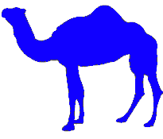

Objectives
- To be able to create tables with rows and columns of data.
- To be able to control the display and formatting of tables.
- To be able to create and use forms.
Yea, from the table of my memory I'll wipe away all trivial fond records.
William Shakespeare
|

|